Algorithmen im Alltag – Schritt für Schritt zum Ziel – Lesespurgeschichte mit Rätselaufgaben (Klasse 5)
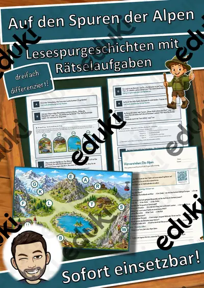
Auf den Spuren der Alpen – Lesespurgeschichte mit Rätselaufgaben (Klasse 5)

Auf hoher See – Lesespurgeschichte mit Rätselaufgaben (Klasse 5)

Collage und Materialbild – Kunst aus Papier, Stoff und Knöpfen – Lesespurgeschichte mit Rätselaufgaben (Klasse 5)

Das Bergwerk – Ein Abenteuer unter Tage – Lesespurgeschichte mit Rätselaufgaben (Klasse 5)

Das Brot – Vom Korn zum Brot – Lesespurgeschichte mit Rätselaufgaben (Klasse 5)

Das Eichhörnchen – Lesespurgeschichte mit Rätselaufgaben (Klasse 5)

Das Frühlingsfest – Neujahr in China – Lesespurgeschichte mit Rätselaufgaben (Klasse 5)

Das Geheimnis der Pyramide (Ägypten) – Lesespurgeschichte mit Rätselaufgaben (Klasse 5)

Das Geheimnis der fünf Sinne – Lesespurgeschichte mit Rätselaufgaben (Klasse 5)

Das Geheimnis des Teichs – Lesespurgeschichte mit Rätselaufgaben (Klasse 5)
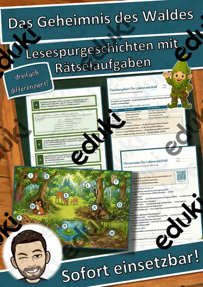
Das Geheimnis des Waldes (Lebensraum Wald) – Lesespurgeschichte mit Rätselaufgaben (Klasse 5)

Das Geheimnis des Wattenmeers – Lesespurgeschichte mit Rätselaufgaben (Klasse 5)

Das Luftlabor – Lesespurgeschichte mit Rätselaufgaben (Klasse 5)

Das Naturkundemuseum – Lesespurgeschichte mit Rätselaufgaben (Klasse 5)

Das Papier – Vom Baum zum Papier – Lesespurgeschichte mit Rätselaufgaben (Klasse 5)

Das Pferd – Lesespurgeschichte mit Rätselaufgaben (Klasse 5)

Das Planetarium – Lesespurgeschichte mit Rätselaufgaben (Klasse 5)
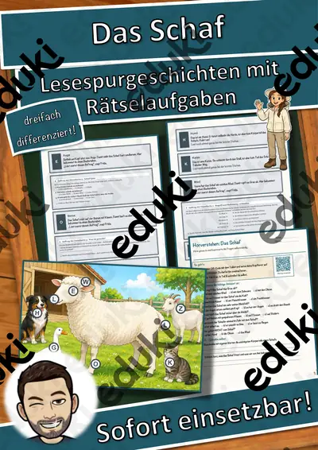
Das Schaf – Lesespurgeschichte mit Rätselaufgaben (Klasse 5)
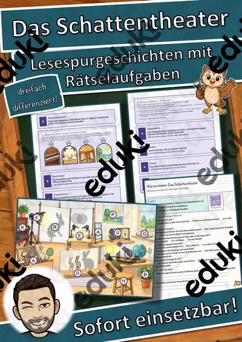
Das Schattentheater – Lesespurgeschichte mit Rätselaufgaben (Klasse 5)

Das Spiegelkabinett – Lesespurgeschichte mit Rätselaufgaben (Klasse 5)

Das Vogelfutterhaus – Lesespurgeschichte mit Rätselaufgaben (Klasse 5)
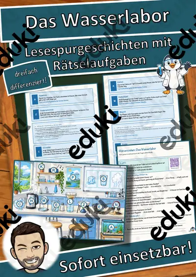
Das Wasserlabor – Lesespurgeschichte mit Rätselaufgaben (Klasse 5)

Dateien und Ordner – Ordnung auf dem Computer – Lesespurgeschichte mit Rätselaufgaben (Klasse 5)

Der Bahnhof – Eine Reise mit der Bahn – Lesespurgeschichte mit Rätselaufgaben (Klasse 5)

Der Boden – Lesespurgeschichte mit Rätselaufgaben (Klasse 5)

Der Farbkreis – Lesespurgeschichte mit Rätselaufgaben (Klasse 5)

Der Fisch – Lesespurgeschichte mit Rätselaufgaben (Klasse 5)

Der Frosch – Lesespurgeschichte mit Rätselaufgaben (Klasse 5)

Der Hund – ein treues Haustier – Lesespurgeschichte mit Rätselaufgaben (Klasse 5)

Der Hund – unser treues Haustier – Lesespurgeschichte mit Rätselaufgaben (Klasse 5)

Der Maulwurf – Lesespurgeschichte mit Rätselaufgaben (Klasse 5)

Der Nachthimmel – Eine Reise zu den Sternen – Lesespurgeschichte mit Rätselaufgaben (Klasse 5)

Der Nationalpark – Lesespurgeschichte mit Rätselaufgaben (Klasse 5)

Der Nistkasten – ein Zuhause für Meisen bauen – Lesespurgeschichte mit Rätselaufgaben (Klasse 5)

Der Pilz – Lesespurgeschichte mit Rätselaufgaben (Klasse 5)
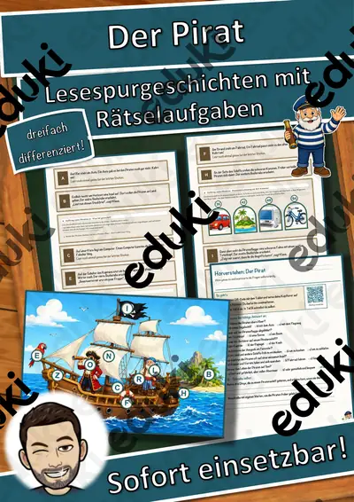
Der Pirat – Ein Abenteuer auf hoher See – Lesespurgeschichte mit Rätselaufgaben (Klasse 5)

Der Specht – Lesespurgeschichte mit Rätselaufgaben (Klasse 5)

Der Strand – Ein Tag am Meer – Lesespurgeschichte mit Rätselaufgaben (Klasse 5)
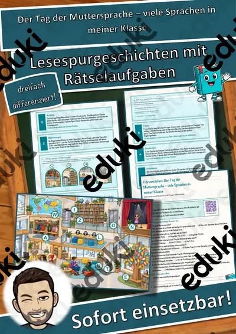
Der Tag der Muttersprache – viele Sprachen in meiner Klasse – Lesespurgeschichte mit Rätselaufgaben (Klasse 5)

Der Weg des Sonnenstrahls (Sonne und Erde) – Lesespurgeschichte mit Rätselaufgaben (Klasse 5)

Der Weihnachtsstern – eine Pflanze aus Mexiko – Lesespurgeschichte mit Rätselaufgaben (Klasse 5)

Der Zirkus – Ein Tag in der Manege – Lesespurgeschichte mit Rätselaufgaben (Klasse 5)

Der Zoo – Ein Tag bei den Tieren – Lesespurgeschichte mit Rätselaufgaben (Klasse 5)

Die Biene – Lesespurgeschichte mit Rätselaufgaben (Klasse 5)
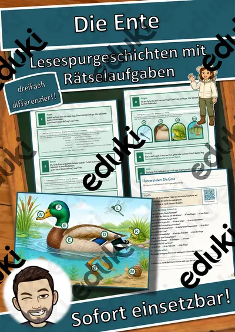
Die Ente – Lesespurgeschichte mit Rätselaufgaben (Klasse 5)

Die Fledermaus – Lesespurgeschichte mit Rätselaufgaben (Klasse 5)

Die Holzbläser – Flöte, Klarinette, Oboe und Fagott – Lesespurgeschichte mit Rätselaufgaben (Klasse 5)
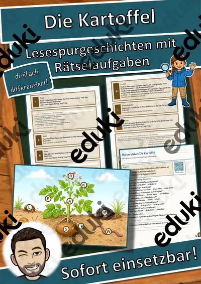
Die Kartoffel – Lesespurgeschichte mit Rätselaufgaben (Klasse 5)

Die Kastanie – Lesespurgeschichte mit Rätselaufgaben (Klasse 5)

Die Klangwerkstatt – Lesespurgeschichte mit Rätselaufgaben (Klasse 5)
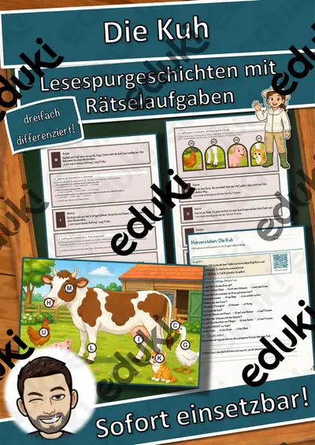
Die Kuh – Lesespurgeschichte mit Rätselaufgaben (Klasse 5)

Die Orientierung – Schatzsuche mit Kompass und Karte – Lesespurgeschichte mit Rätselaufgaben (Klasse 5)

Die Pflanze – Vom Samen zur Frucht – Lesespurgeschichte mit Rätselaufgaben (Klasse 5)

Die Reise in die Steinzeit – Lesespurgeschichte mit Rätselaufgaben (Klasse 5)

Die Reise um die Erde – Lesespurgeschichte mit Rätselaufgaben (Klasse 5)
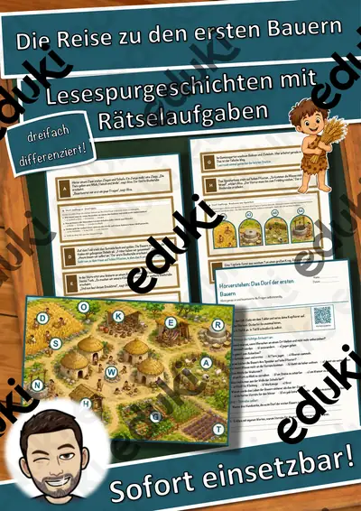
Die Reise zu den ersten Bauern – Lesespurgeschichte mit Rätselaufgaben (Klasse 5)
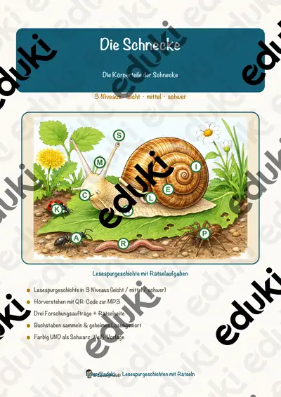
Die Schnecke – Lesespurgeschichte mit Rätselaufgaben (Klasse 5)

Die Spinne – Lesespurgeschichte mit Rätselaufgaben (Klasse 5)

Die Tastatur – Zehnfingersystem und Tastenkürzel – Lesespurgeschichte mit Rätselaufgaben (Klasse 5)

Die Turnhalle – Ein Tag beim Geräteturnen – Lesespurgeschichte mit Rätselaufgaben (Klasse 5)
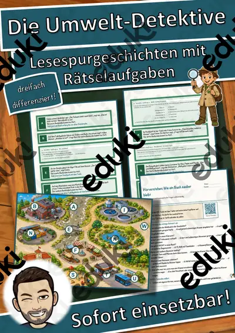
Die Umwelt-Detektive – Lesespurgeschichte mit Rätselaufgaben (Klasse 5)

Die Wahl in der Klasse – Lesespurgeschichte mit Rätselaufgaben (Klasse 5)

Die Wolle – Vom Schaf zum Pullover – Lesespurgeschichte mit Rätselaufgaben (Klasse 5)

Die Zaubershow – Hinter den Kulissen der Magie – Lesespurgeschichte mit Rätselaufgaben (Klasse 5)
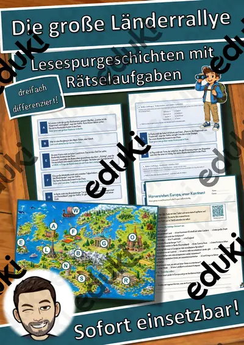
Die große Länderrallye – Lesespurgeschichte mit Rätselaufgaben (Klasse 5)

E-Mails und Netiquette – höflich und sicher schreiben – Lesespurgeschichte mit Rätselaufgaben (Klasse 5)

Ein Tag in den Alpen – Lesespurgeschichte mit Rätselaufgaben (Klasse 5)

Essen verbindet – Speiseregeln und Fasten in den Religionen – Lesespurgeschichte mit Rätselaufgaben (Klasse 5)

Feste der Weltreligionen – Lesespurgeschichte mit Rätselaufgaben (Klasse 5)
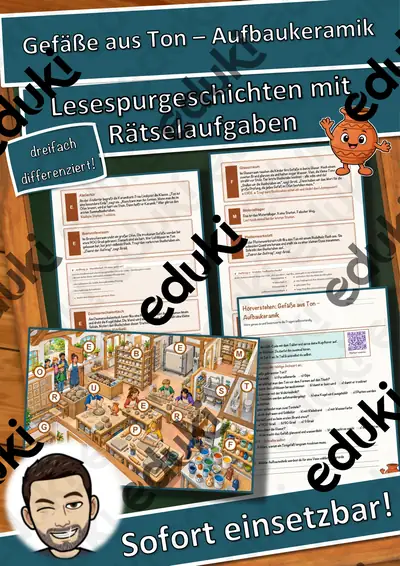
Gefäße aus Ton – Aufbaukeramik – Lesespurgeschichte mit Rätselaufgaben (Klasse 5)
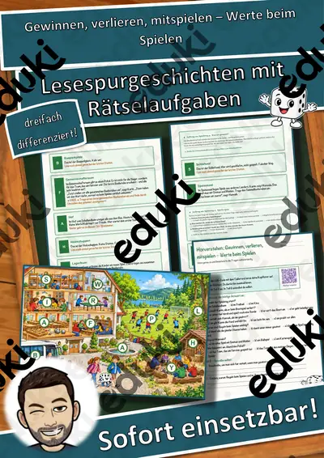
Gewinnen, verlieren, mitspielen – Werte beim Spielen – Lesespurgeschichte mit Rätselaufgaben (Klasse 5)
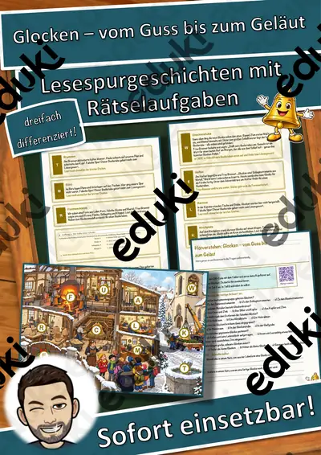
Glocken – vom Guss bis zum Geläut – Lesespurgeschichte mit Rätselaufgaben (Klasse 5)

Handnähen – Säckchen für den Adventskalender – Lesespurgeschichte mit Rätselaufgaben (Klasse 5)

Höhlenmalerei – die ersten Künstler – Lesespurgeschichte mit Rätselaufgaben (Klasse 5)
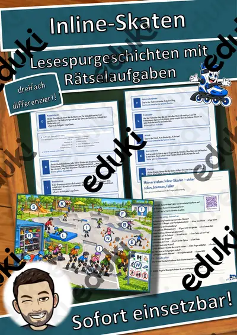
Inline-Skaten – sicher rollen, bremsen, fallen – Lesespurgeschichte mit Rätselaufgaben (Klasse 5)

Jagd auf das Mammut – Lesespurgeschichte mit Rätselaufgaben (Klasse 5)

Jeder sieht die Welt anders – Wahrnehmung und Blickwinkel – Lesespurgeschichte mit Rätselaufgaben (Klasse 5)

Kaninchen und Meerschweinchen artgerecht halten – Lesespurgeschichte mit Rätselaufgaben (Klasse 5)

Masken gestalten – Gesichter verwandeln – Lesespurgeschichte mit Rätselaufgaben (Klasse 5)

Materialpaket Advent für die 5. Klasse: 3 Lesespurgeschichten mit Rätselaufgaben (Weihnachtsstern, Plätzchen backen, Handnähen)
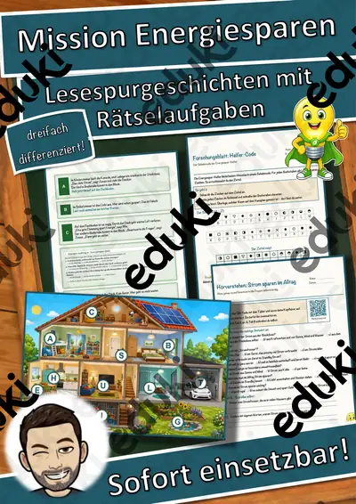
Mission Energiesparen – Lesespurgeschichte mit Rätselaufgaben (Klasse 5)

Programmieren mit Blöcken – meine erste Animation – Lesespurgeschichte mit Rätselaufgaben (Klasse 5)

Rekorde beim Erntefest – Längen, Gewichte und Größen umrechnen – Lesespurgeschichte mit Rätselaufgaben (Klasse 5)
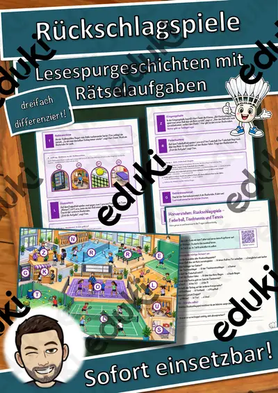
Rückschlagspiele – Federball, Tischtennis und Tennis – Lesespurgeschichte mit Rätselaufgaben (Klasse 5)
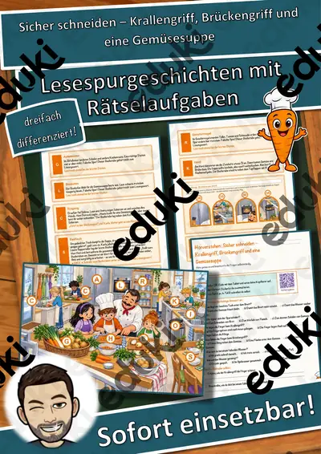
Sicher schneiden – Krallengriff, Brückengriff und eine Gemüsesuppe – Lesespurgeschichte mit Rätselaufgaben (Klasse 5)
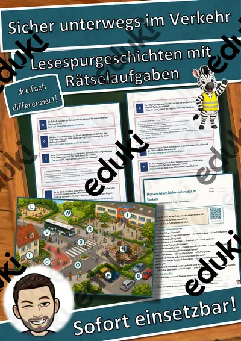
Sicher unterwegs im Verkehr – Lesespurgeschichte mit Rätselaufgaben (Klasse 5)
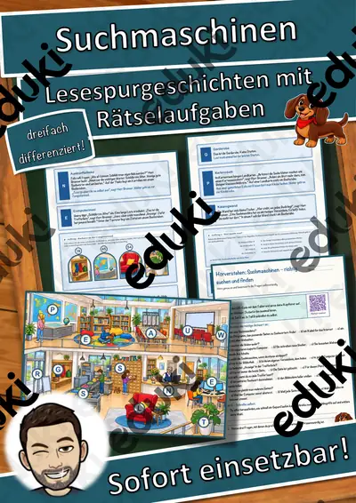
Suchmaschinen – richtig suchen und finden – Lesespurgeschichte mit Rätselaufgaben (Klasse 5)

Tanzen in der Schule – Rhythmus und Bewegung – Lesespurgeschichte mit Rätselaufgaben (Klasse 5)

Vom Feld in den Laden – der Weg des Apfels – Lesespurgeschichte mit Rätselaufgaben (Klasse 5)

Wassily Kandinsky – wenn Farben klingen – Lesespurgeschichte mit Rätselaufgaben (Klasse 5)
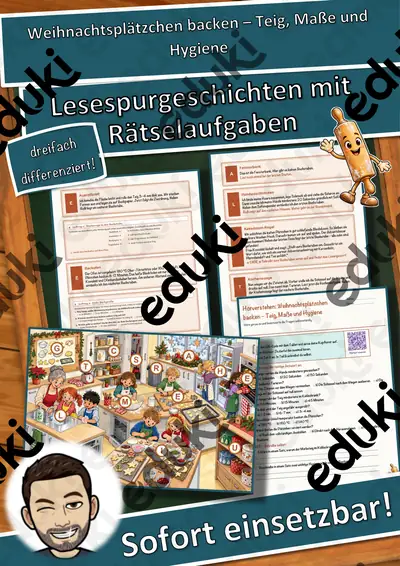
Weihnachtsplätzchen backen – Teig, Maße und Hygiene – Lesespurgeschichte mit Rätselaufgaben (Klasse 5)

Zusammenleben in der Familie – Lesespurgeschichte mit Rätselaufgaben (Klasse 5)
Lesespurgeschichten in der 5. Klasse
Der Übergang in die weiterführende Schule zeigt sich in der Klasse besonders deutlich. Weil alle drei Niveaustufen denselben Weg und dasselbe Lösungswort haben, können sie nebeneinander laufen, ohne dass jemand ausgestellt wird.
Jede Geschichte liegt in drei Niveaustufen vor, die sich in Textlänge, Satzbau und Aufgabenanspruch unterscheiden. Weg, Stationen und Lösungswort bleiben gleich, sodass alle Fassungen gleichzeitig in einer Klasse laufen können.
Themen auf dieser Seite
Beispiele aus dieser Sammlung: Gefäße aus Ton · Algorithmen im Alltag · Das Eichhörnchen · Das Bergwerk · Das Spiegelkabinett · Inline-Skaten · Das Pferd · Der Nachthimmel.